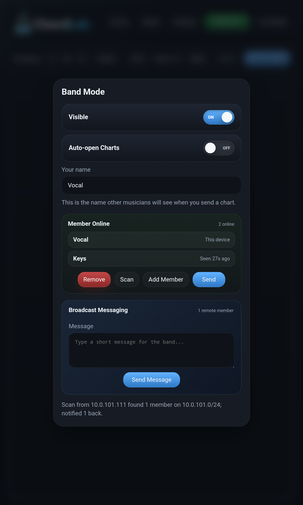
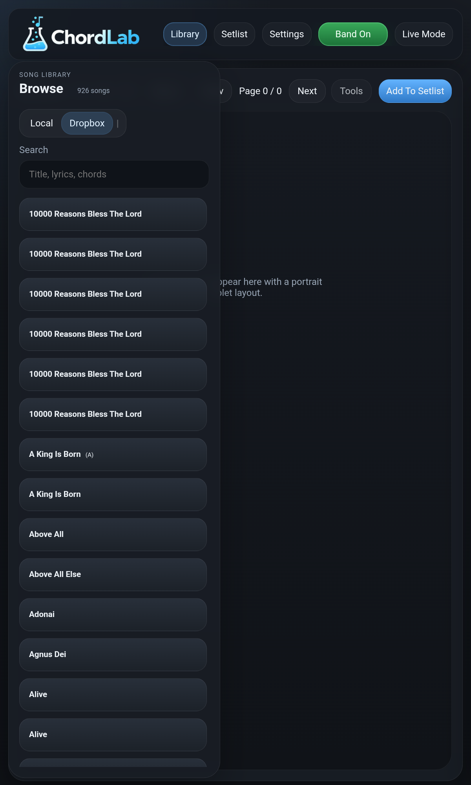
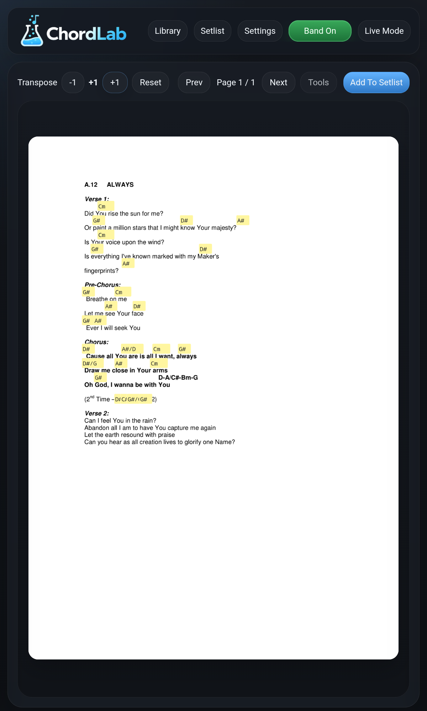
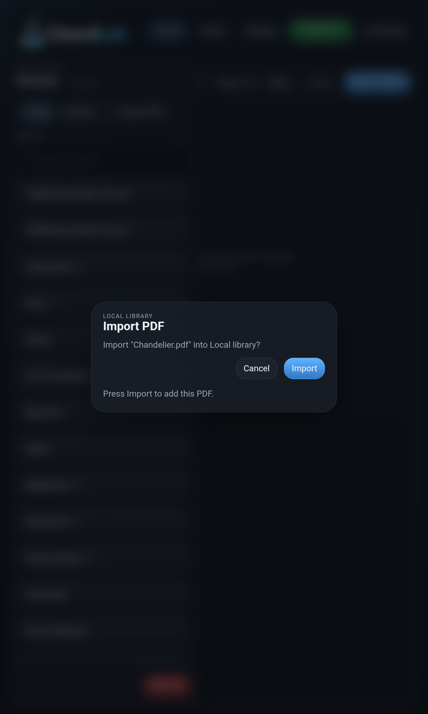

Setlists
Drag songs into the right running order.
Build the exact flow for rehearsal or stage, then make changes quickly without losing momentum.

For rehearsals, worship teams, and live bands
ChordLab keeps your PDF chord sheets, setlists, transposition, annotations, and Band Mode sharing in one tablet-friendly workspace.
Inside ChordLab
Browse your library, reorder a live set, share charts across the band, and annotate on the fly with a workspace designed for performance.
Setlists
Build the exact flow for rehearsal or stage, then make changes quickly without losing momentum.

Band Mode
Keep the whole team aligned on the same local network with chart sharing and quick broadcast tools.

Library

Markup tools

Import

What ChordLab does
Made for live performance, worship teams, and band rehearsals with a focus on speed, clarity, and reliability.
Import local PDFs or sync a Dropbox folder, then browse and search your charts quickly.
Create setlists, reorder songs by dragging, and keep your live set ready for the next rehearsal.
Move charts up or down by semitone, including common slash chords.
Use pen and eraser tools to mark charts directly during practice or performance.
Send the current chart to online band members on the same local network.
Send short notes to remote members, such as repeat chorus or go to bridge.
Help
FAQ
Do all tablets need the same Dropbox account?
No. If the receiving tablet does not have the PDF, ChordLab can receive the sent PDF and store it locally.
Does Band Mode use the internet?
Band Mode is designed for devices on the same local network. It does not require a ChordLab cloud server.
FAQ
No. If the receiving tablet does not have the PDF, ChordLab can receive the sent PDF and store it locally.
Band Mode is designed for devices on the same local network. It does not require a ChordLab cloud server.
Check that both devices are on the same network, Visible is on, and the network allows devices to reach each other.
Yes. Local library songs can be removed from the app without affecting Dropbox files.
Support
For app support, bug reports, or Play Store privacy questions, please contact the developer through GitHub.